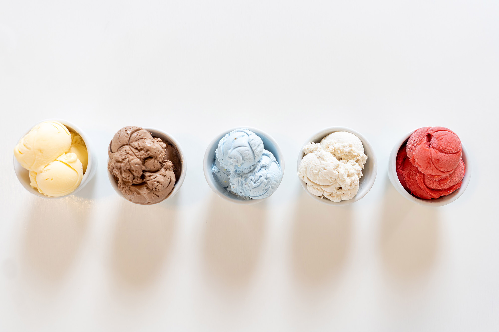

South Central PA's Best Ice Cream Shops
It can be so hard to find a good ice cream shop to go to and with so many options it can be overwhelming. Do you need help? Look no further! We’ve curated a list of the 6 best ice cream shops in South Central Pennsylvania. Check them out!
Sarahs's Creamery
Sarah’s Creamery delights the town of Dover, PA
with ice cream straight from Berkey Creamery at
Penn State. Along, with homemade ice cream,
provide seating!
Bill Mack's Ice Cream
Bill Mack’s is a York County tradition! They have
been their delicious homemade ice cream since
1963. They provide a variety of flavors and
seasonal options too.
Mr.G's Ice Cream
Mr. G’s is dishing up homemade ice cream,
sundaes and milkshakes out of their redbrick
home in downtown Gettysburg, PA. They have
a variety of flavors.
Papertown Dairy Bar
The Dairy Bar in Spring Grove, PA offers many ice
cream options including soft serve and snowcones.
The restaruant also serves as a diner to get food
before your sweets.
Half Pint Creamery
Half Pint serevs a variety of fun flavors including
Gluten Free and Dairy Free options. They also
have frozen cakes, ice cream snadwiches and
puppy treats!
Ripleigh's Creamery
Ripleigh’s is a believe it or not creamery. They
have the craziest flavors and they have options
like mega sundaes and bubble waffles. Try out
their bacon ice cream!